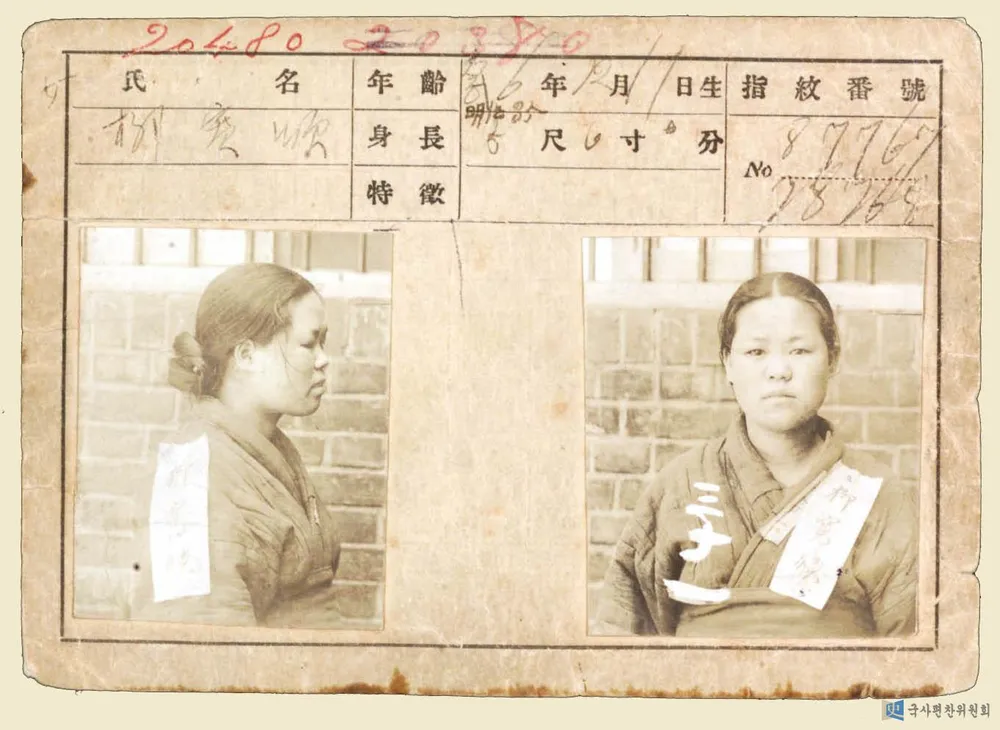

Tribute page
Yu Gwan-sun
a Korean Independence Activist

Photo source: National Historical Compilation Committee Korean History Database → Person Subject to Japanese Imperial Watch Card →
Yu Gwan-sun
Tribute Info
Link to
wikipedia
Link to
The New York Times
Link to
Digital Archives of Merit Records
Link to
The Unsung Heroes Who Fought For Independence!
Link to
Arirang Prime Ep150 Yu Gwan-sun, Korea's Joan of Arc
on Youtube